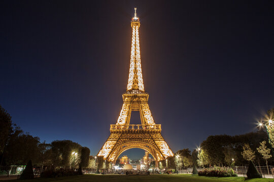
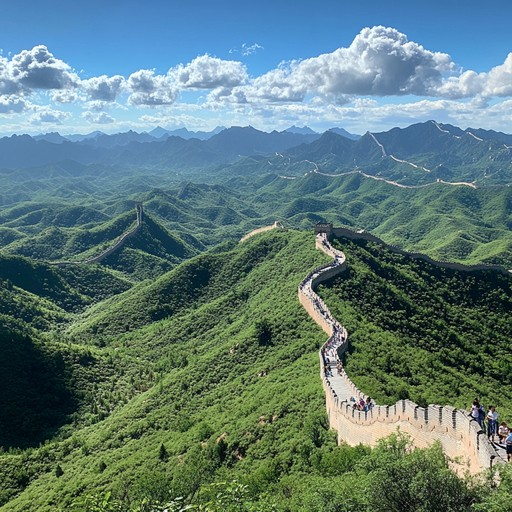
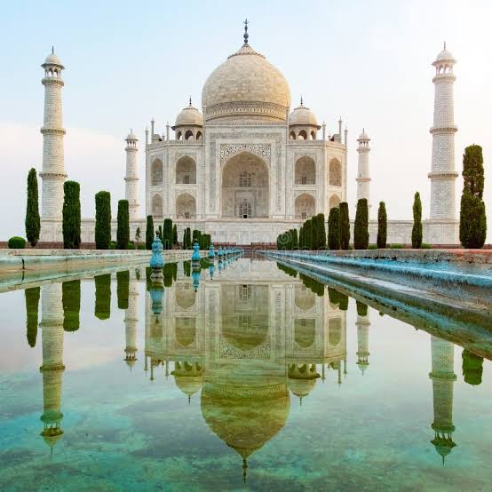
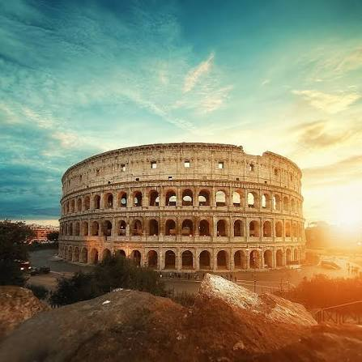
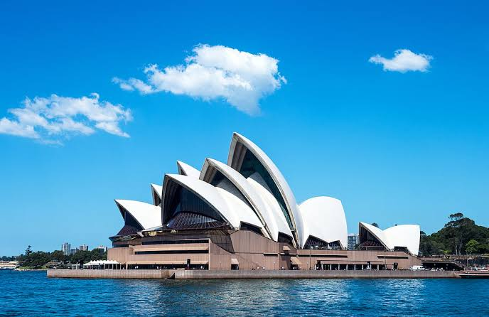
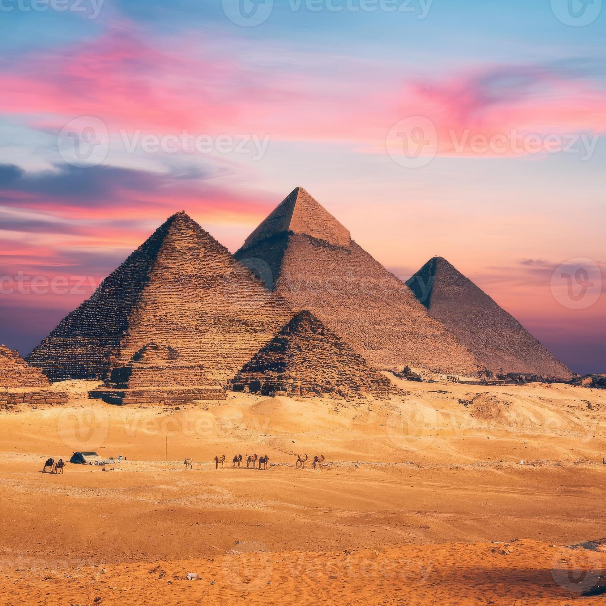
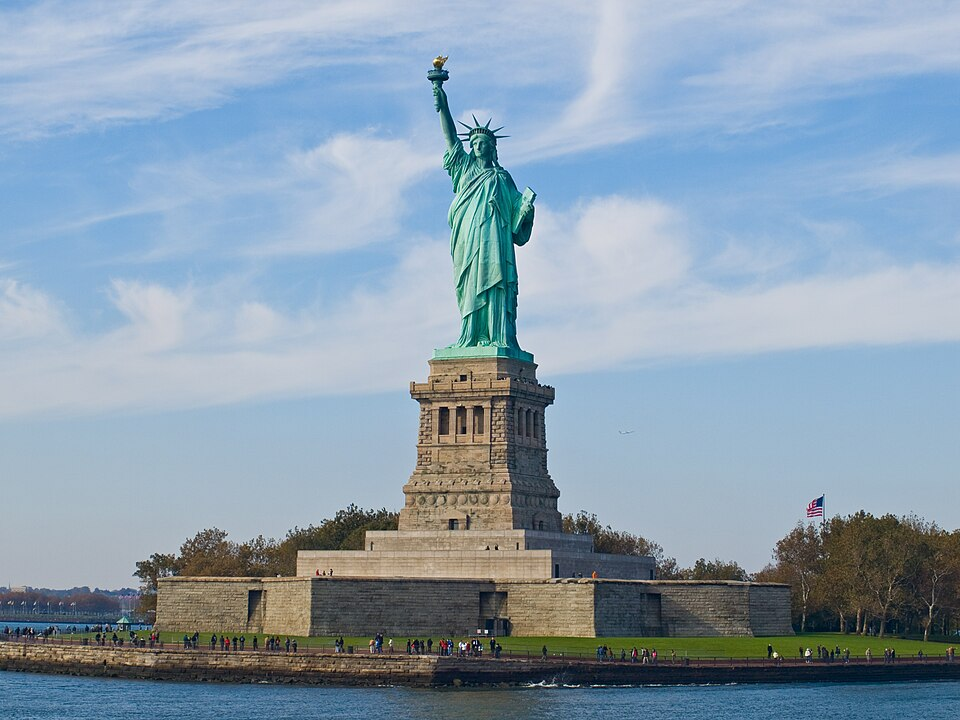
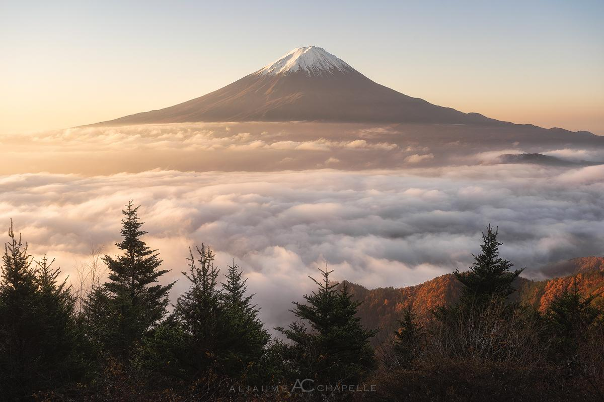

This site is a responsive photo gallery that showcases nine famous landmarks from around the world. It was built to demonstrate a mobile-first approach to web design, where the base styles are written for small screens first and then enhanced for larger devices using media queries.
As you resize your browser window, notice how the layout changes from a single column on mobile devices, to a two column grid on tablets with circular images, and finally to a large screen layout where every third image spans two columns. The site also respects your operating system's preference for reduced motion and dark color schemes.








